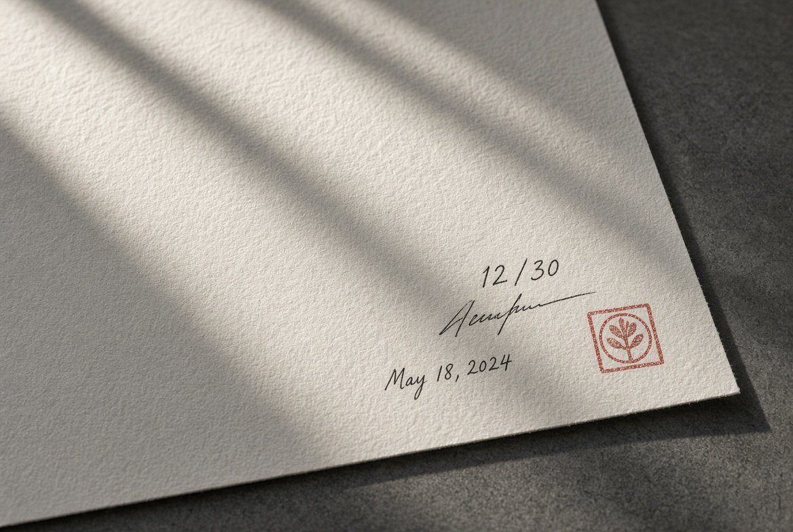

Une œuvre,
pas un poster.
Trente exemplaires par photographie, signés et numérotés au dos. Quand le trentième est vendu, l'édition est close pour toujours.
Entrez par ce qui vous parle.
Des photographies prises sur place, en reportage, jamais mises en scène. Chaque univers a sa lumière.
Retournez-le.
Chaque tirage porte, au dos, le titre, le numéro d'exemplaire sur trente, la date et la signature de l'auteur. C'est ce qui fait la différence entre une œuvre et une impression.
Cliquez sur le tirage pour voir son dos.
 Signé à la main
Signé à la main Certificat d'authenticité
Certificat d'authenticité
Signé, numéroté, daté · le numéro est attribué à la commande

À l'échelle, chez vous.
Le canapé mesure deux mètres. Choisissez l'œuvre, le format, le support, la couleur du mur, la lumière du jour ou de la nuit. Puis photographiez votre propre mur.
Essayer
Joël Gourlain, Le Havre.
Reportages, concerts, art de rue et voyages : des photographies prises sur le vif, éditées en tirages d'art limités, signés et numérotés, disponibles ici exclusivement. Des Nuits Suspendues du Havre aux escaliers des Cyclades.
« La photographie n'a pas de limite, géographique, culturelle ou économique. »
Joël Gourlain, Le Havre